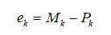
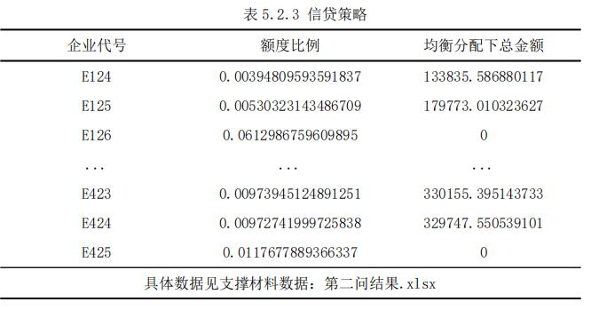
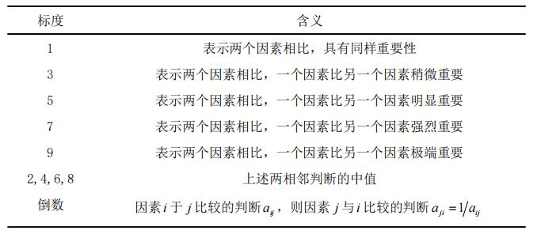

A System to Evaluate the Impact of Candidate policies on the Economy
Abstract
- The election of different candidates will shape different strategic patterns of global economic and financial development, and have a greater impact on the U.S. economy and the global economy (including China’s economy). In order to explore how different policies will affect the economy of the United States and China, we have established a system to evaluate the impact of candidate policies on the economy.
- In task 1, in order to find out the impact of different candidates on the U.S. economy, we establish an economic evaluation model based on cluster regression. First of all, we analyze the topic, select GDP as an indicator to measure the U.S. economy, and select 24 factors that affect the U.S. economy according to the economic evaluation system of the world bank. Secondly, we use the principal component analysis method to reduce the dimension of 24 sub factors, and get three principal component factors, and then use cluster analysis to verify that the correlation between the principal component factors is small; finally, we take the U.S. GDP as the explanatory variable and the three principal component factors as the explanatory variables to establish a multiple linear regression equation(see formula 5-1-5, 5-1-6). And we got the possible impact of different candidates elected on the U.S. economy.
- In task 2,in order to find out the impact of different candidates on China's economy, we improve the economic evaluation model based on cluster regression. First of all, we use the model of question 1 to eliminate irrelevant index factors and find out the factors that have an impact on China's GDP. Secondly, we take China's GDP as the explanatory variable and the selected factors as the explanatory variable to establish a multiple linear regression equation(see formula 5-2-4, 5-2-5). And we got the possible impact of different candidates elected on China’s economy.
- In task 3,we set up the analytic hierarchy process (AHP) optimization model, which integrates multiple methods through stacking, and can also simply weight and take the mean value. After that, we put the indicators of the two candidates' successful election into the comprehensive evaluation system. Finally, we quantified China's response measures as the disturbance of the indicators through emotional quantification. Finally, we optimize China's response measures according to the impact relationship and the main indicators of the impact of question 2 on China's economy, and based on the principle of the most conducive to the country's long-term development, we put forward practical suggestions on China's economic countermeasures and policies in relevant fields.
1 Restatement of the problem
1.1 Problem Background
- 2020 is the year of US presidential election, with Republican candidate Donald Trump and Democratic counterpart Joe Biden running for president. The candidates of both parties have different political stands and administrative programs in finance and trade, economic and financial governance, and some other different key development areas (such as COVID-19 fighting measures, infrastructure, taxation, environmental protection, medical insurance, employment, trade, immigration, education, etc.). The election of different candidates will shape different strategic patterns of global economic and financial development, and have a greater impact on the U.S. economy and the global economy (including China’s economy)
1.2 Our Efforts
- Different policies can affect America’s economy and China’s economy. Our team is asked to collect the candidate’s policy propositions, policy guidelines and relevant data in different fields, and answer the following questions:
- 1.Establish a mathematical model and use relevant data to quantitatively analyze the possible impact of different candidates elected on the U.S. economy.
- 2.Establish a mathematical model and use relevant data to quantitatively analyze the possible impact of different candidates elected on China’s economy.
- 3.Suppose you were members of China’s Think Tank for Economic Development, combined with the mathematical models of questions 1 and 2, what suggestions would you make to China’s economic countermeasures and policies in related areas in both cases (which party wins)? Please illustrate your points specifically.
2 Problem analysis
- The first problem is regression analysis and evaluation, which requires a quantitative analysis of the possible impact of different candidates on the U.S. economy. To solve this problem, we use factor analysis algorithm and factor clustering algorithm to establish principal component analysis model. First of all, the total GDP of the United States measures the U.S. economy, standardizes and brings in 12 indicators, such as infrastructure, tax and environmental protection, which may have an impact on the U.S. economy during the term of office of different candidates. Through factor analysis, the matrix rotation and ANOVA test are carried out, and the irrelevant index factors are eliminated and the dimensions of the indicators are reduced. Then, we use k-means analysis method to find out the relationship between the three factors and the GDP of the United States, and then get the influence relationship of each index on GDP. Through the quantitative analysis of the policies of different leaders through the analytic hierarchy process, we can get the influence relationship of different leaders' strategic models on GDP. Finally, the sensitivity of the model is tested. The results show that the state or output changes of the model are less sensitive to the changes of system parameters or independent conditions, and the results are convincing.
- The second problem is regression analysis and evaluation. In view of the second question, based on the model of question one, we take China's GDP as an indicator to measure China's economy, and standardize the influence indicators such as import and export of goods and tariffs that affect China's GDP into the principal component analysis model. Then, through factor analysis and rapid clustering, the expressions of different indicators and GDP are obtained, and the influence relationship of different strategic models of leadership on China's GDP is obtained by using AHP. Finally, the sensitivity test shows that the model is stable and the error is within the standard range.
- The third problem is decision-making suggestion. In view of the third question, we have established the analytic hierarchy process (AHP) optimization model. China's response measures can be regarded as a disturbance to these indicators. According to the relationship between the first two questions and the main indicators of the second question's impact on China's economy, we optimize China's countermeasures and policies in relevant fields based on the principle of the most conducive to the long-term development of Chinese parents and other practical suggestions.
3 Assumptions and Justification
- 1.It is assumed that the references and conclusions cited in this paper are correct and reliable.
- 2.It is assumed that the index data searched in this paper is true and reliable, and the sample data can reflect the specific situation.
- 3.It is assumed that the original observation indexes of the model can be replaced by new factors.
- 4.It is assumed that the original observation indexes of the model can be replaced by new factors.
- 5.It is assumed that if the value of an indicator has a small impact on the economic indicators, the impact will be ignored.
4 Notations

5 Framework
5.1 Task 1
- In order to find out the impact of different candidates on the U.S. economy, we establish an economic evaluation model based on cluster regression. First of all, we choose the indicators to measure the U.S. economy, and according to the economic evaluation system of the world bank, we select the factors that affect the U.S. economy. Secondly, we use principal component analysis to reduce the dimensions of the sub factors, and then use cluster analysis to verify that the correlation between the principal components is small. Finally, we will measure the indicators of the U.S. economy as the explanatory variables, the principal component factors as the explanatory variables, establish a multiple linear regression equation, and then conduct qualitative analysis to find out the impact of different policy factors on the U.S. economy, and further analyze the impact of different candidates on the U.S. economy. The analysis process of influencing factors of US economy based on cluster analysis is shown in figure 5-1-1.

- 5.1.1 Primary indicator system of U.S. economy based on Cluster Analysis
- （1） Cluster Analysis
- Cluster analysis is one of the commonly used methods to solve the problem of subdivision of economic influencing factors. It is a classification method based on the characteristics of things. The principle of cluster analysis is that the individuals of the same class have great similarity among the sub classes after division, and the individuals without class have obvious differences.In this study, using the method of cluster analysis to study the main factors affecting the U.S. economy is not necessary to draw up the classification criteria in advance, and human factors will not interfere in the process of clustering. This method can ensure the comprehensive analysis of each attribute from the perspective of preprocessed sample data, and the final classification results can fully reflect the characteristics and differences of various factors.
- Step1:Extraction of original variables
- Because GDP is the decisive factor to measure a country's economic development, we choose GDP as the indicator to measure the economy, that is, GDP as the explanatory variable.
- According to the problems, the main factors affecting the U.S. economy are selected as the original variables of cluster analysis, and the types of variables and storage types are defined.
- Where
- `x_i`—Merchandise exports, Merchandise imports, Merchandise trade, Net barter terms of trade index, High-technology exports, Tax revenue, Birth rate, Death rate, Life expectancy at birth, Mortality rate, Immunization(measles), Electric power consumption, Secure Internet servers, Rail lines, School enrollment(primary), School enrollment(secondary), School enrollment(tertiary), Construction expenditure on education, CO2 emissions, Forest area, Terrestrial protected areas, GDP per person employed, Labor force(total), Unemployment.
- Step2:Dimension reduction of original variables
- In order to fully understand the information of things, most researchers tend to make a large number of observations on many attribute factors related to things, and collect a large number of data through statistical analysis to explore the law of the object. Many variables and large samples can show the comprehensive and rich information of the target things to a great extent, but the correlation between variables will cause great interference to the analysis of the problem. On the contrary, it is easy to fall into the misunderstanding of limitation if we analyze each variable separately, and we can't grasp the characteristics of the target thing as a whole, which is very easy to draw a limited and biased conclusion.
- Therefore, it is necessary to find a way to reduce the number of original variables and retain the information contained in the original variables as much as possible. This paper uses the method of dimension reduction to select representative variables. Factor analysis is a common method of dimensionality reduction. It can accurately find the potential factors which can not be obtained by direct observation but have a certain dominating effect on the changes of observable variables in the variables with correlation. If the variables with high correlation are expressed by the same factor, the number of variables can be partially reduced. In this study, the original variables were reduced by SPSS software.
- Step3:Sample clustering
- Using the principal component factors extracted after dimensionality reduction as the classification standard, the relevant data affecting the U.S. economy are clustered, and the clustering results are tested and evaluated. If the clustering result is ideal, it will enter into the next step of subdivision of influencing factors of American economy; on the contrary, factor analysis is used to find new classification variables as the input of re clustering.
- Step4:Description of subclass influencing factors
- From the perspective of each classification variable, the statistical characteristics of clustering results on each classification variable are described and analyzed. It is of practical significance to describe the formation of molecular scale in detail.
- In this study, SPSS (A kind of software) is used to realize the process of cluster analysis.
- （2）Dimensionality Reduction of initial variables
- The original variables before the dimensionality reduction were selected from the policies of different candidates that may have an impact on the U.S. economy, mainly including finance and trade, economic and financial governance, and some other different key development areas (such as COVID-19 fighting measures, infrastructure, taxation, environmental protection, medical insurance, employment, trade, immigration, education, etc.). The original variables are as follows:


- Step1:Data preprocessing
- Before the principal component analysis, the data in Annex 1 should be dimensionless, that is, the unified unit.
- Some factors are not relevant, there are more important links, the proportion of being explained is too low, in order to avoid the production of unrelated links, we will eliminate them.
- Step2:KMO and Bartlett
- Before factor analysis, it is necessary to test the applicability of the original variables. In SPSS, Kaiser metey Olkin statistics can be calculated and Bartlett test of sphericity can be carried out. The test results are shown in table 5-1-2. Kmo is 0.600 and SIG is less than 0.05, indicating that there is a certain relativity between the original variables, which is suitable for further factor analysis.
- We use principal component analysis to extract factors from the original variables, and determine the number of factors by the condition that the eigenvalue is greater than 1. Table 5-1-3 and figure 5-1-2 show that the contribution of 24 component indicators to principal component analysis is slightly biased, and the eigenvalues of the first three component indicators are greater than 1, indicating that their contribution to principal component analysis is more significant, and they can explain more than 90% of the original information, and the interpretation effect is good.

- Extraction Method: Principal Component Analysis.


- Extraction Method: Principal Component Analysis.

- a. 3 components extracted.
- From the component matrix table 5-1-4, we can find that the load difference of different original variables in the extracted principal components 1, 2 and 3 is not big, which is not easy to explain the meaning of each principal component through the original variables. Therefore, in order to further describe the attribution of each variable in the principal component, we use the maximum variance method varimax in the rotation instruction to process. With Kaiser standardization, the orthogonal rotation method can minimize the number of variables with the highest load on each principal component, so as to simplify the interpretation of principal components. The selection component matrix and the components in the rotation space obtained by the maximum variance method are shown in table 5-1-5.


- （3）两方案的最终信贷政策
5.2 问题2模型的建立与求解
- 5.2.1 BP神经网络模型的选择与建立
- （1）选择 BP 神经网络模型的原因
- （2）设计 BP 神经网络学习模型
- （3）设计 BP 神经网络预测模型


- 


- 5.2.2 信贷策略的提出
- 5.2.3 模型的求解


- 
5.3 问题3模型的建立与求解
- 5.3.1 层次结构模型的建立
- （1）层次模型的构建

- 


- （3）得出金额
- 5.3.2 模型的求解


六、模型的评价与推广
6.1 模型的评价
- 6.1.1 问题一的模型评价
- 6.1.2 问题二的模型评价
- 6.1.3 问题三的模型评价
6.2模型的推广